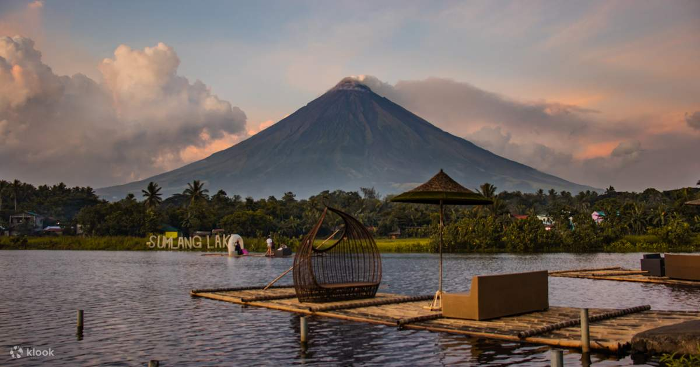
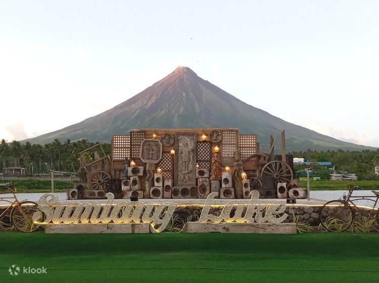

Sumlang Lake
Poblacion, Camalig, Albay
Embark on a journey of spiritual serenity and leisure at Kawa Kawa Hill, a haven nestled at the heart of tranquility. With vast lawns inviting picnics, serene gardens, and shaded spots for relaxation, this destination beckons tourists seeking both spiritual rejuvenation and a blissful escape into nature.
Tucked away in the lush surroundings of Camalig, Albay. Sumlang Lake entices
guests with its placid waters and alluring environment.
A place of sanctuary and tranquility and breathtaking views can be found at this undiscovered gem,
far from the busy city. The vivid hues of the sky are reflected by the lake’s mirror-lake, creating
a captivating canvas that changes throughout the day.


Photo | Klook
Photo | Tagkaro

Visitors Experience and Activities:
The peaceful boat ride across the lake is one the highlights of the visit.
Traditional bamboo rafts with vibrant umbrellas offer a unique way to take in the vastness of the lake
itself. Visitors can relax and establish a connection with nature because of the peaceful atmosphere
created by the rhythmic paddling and the light breeze. Lakeside pavilions and
cottages are also available at Sumlang Lake for those seeking an extended visit.
These offer a relaxing and picturesque environment for get-together, picnics, or just
taking in the scenery. Local vendors near Sumlang Lake provide a taste of Bicolano delicacies
and cuisine. Savor real flavors in savory and sweet dishes while taking in the views of the lake.


Photo | Klook
Photo | Trevally Travel and Tours
Deanne Clarice Bea
Sumlang Lake is a perfect retreat for nature lovers🍃, and I highly recommend it to anyone visiting Albay.
It's a hidden gem that offers a peaceful escape and a chance to appreciate the beauty of nature and local
culture. I look forward to returning to Sumlang Lake on my next trip to Albay.
Will definitely recommend Sumlang Lake to my friends!🥰
3 days ago